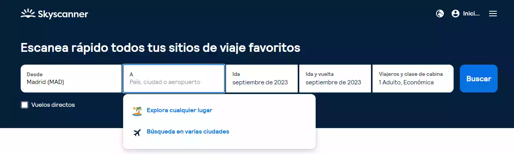
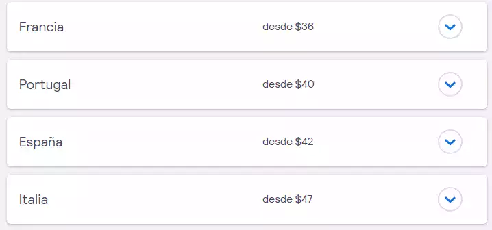

Por Gonzalo Volpe Gómez
Vamos a ir directo y al grano como me gusta. Te voy a enseñar cuatro prácticas que si las implementás cuando buscás y comprás vuelos, te vas a ahorrar muchísimo dinero. De esta manera, pude hacer posible mi viaje a Maldivas y también me ahorré más de 300 dólares en mi Euroviaje lowcost.
Para entender cómo conseguir vuelos baratos, es importante comprender cómo funcionan las aerolíneas y compañías que venden tickets aéreos. No hay precios fijos, los precios son variables. Esto quiere decir que dependiendo de la cantidad de lugares disponibles que tenga un vuelo y de la cantidad de personas que quieran viajar a ese destino, los precios van a aumentar o disminuir.
A su vez, mediante un sistema de trackeo de ip, las páginas web detectan nuestro interés en ciertos productos y servicios y los vuelos no se quedan afuera. Es decir, que mientrás más veces busquemos un vuelo o una ruta, estamos dejando claro nuestro interés en ese destino y por ende, nos empiezan a subir los precios. Por eso, te recomiendo que siempre busqués vuelos en modo incógnito y si podés, que todas las búsquedas sean desde un ordenador distinto al que vas a usar para comprar. ¡Ey, sos un exagerado Gonza! No, literalmente funcionan así las páginas de venta de aéreos y muchas veces el que tenemos al lado nuestro en el avión pago la mitad o el doble que nosotros.
El primer error que cometemos al buscar vuelos es buscar aéreos desde donde queremos iniciar nuestro viaje hasta donde queremos llegar y no me refiero a solamente vuelos directos, esto incluye vuelos con escalas pero que las aerolíneas nos administran todo desde nuestra ciudad hasta la ciudad destino. Está ok hacer esto para tener noción de lo que sale el vuelo pero no debemos quedarnos con eso solo, generalmente los buenos precios se consiguen de la manera que te cuento acá abajo.
¿Cuál es la mejor forma de conseguir vuelos baratos? Utilizar aeropuertos de ciudades gigantes las cuales poseen un gran tráfico y mucha disponbilidad de vuelos diarios. Un ejemplo es Guarulhos, el aeropuerto de San Pablo. Para mi viaje a europa logré ahorrarme 300 dólares al volar primero a San Pablo y luego a Madrid, con el plus de que podés sumar una nueva ciudad para conocer y pasear aunque sea uno o dos días. Otros aeropuertos que pueden chequear son el de Lima, el de Bogotá, el de Río de Janeiro y todos los que sean de grandes ciudades. Uno nunca sabe cuál de esos puede ser el que nos regale un descuentazo y nos ahorre unos cuantos dólares.
Una muy buena forma de encontrar vuelos baratísimos es mediante el buscador de Skyscanner. ¿Cómo sacarle provecho a Skyscanner? Al ingresar al buscador, debemos colocar en "desde" el lugar de destino al que queremos ir. Por ejemplo, si estamos en Buenos Aires y queremos ir a Madrid, colocamos Madrid (estamos haciendo el proceso a la inversa). Luego en "A", colocamos "Explorar cualquier lugar", elegimos las fechas y el buscador nos va a traer las ciudades con vuelos más baratos desde y hacia Madrid. Con esto vamos a lograr un listado de aeropuertos que conectan con Madrid económicamente, ahora solo falta ver cuál es el precio de nuestra ciudad a ese aeropuerto y si nos representa un verdadero ahorro. ¡Se van a sorprender!
Configuración del buscador.
Resultados con los destinos más baratos.
Para usar esta herramienta es muy importante calcular bien el tiempo entre cada vuelo, te recomiendo que la diferencia entre tu llegada a la ciudad intermediaria, por ejemplo San Pablo, y la salida hacia tu ciudad de destino final sea al menos de un día. De está manera, vas a poder pasear y andar tranquilo/a sin correr. Otra recomendación importantísima es que chequees el horario local de la ciudad intermediaria, ya que hay muchas ciudades que tienen horarios distintos al lugar en el que vivimos.
Muchos recomiendan comprar los aéreos 4 semanas antes de la fecha deseada porque puede tener una baja importante si el vuelo no es muy demandado. Te desaconsejo esto ya que si el vuelo es demandado, te va a salir carísimo. Lo mejor, es comenzar a buscar desdde unos seis meses antes y cuando encontramos un precio que nos parezca acorde, comprar.
¿Para comprender si es un precio acorde, podés hacer un promedio de los vuelos en los siguientes meses, por ejemplo, si estás en enero y querés viajar en junio, ves cuánto cuesta viajar en enero, en febrero, en marzo, en abril, en mayo y en junio y ahí sacás un promedio. Si el valor del vuelo que estás interesado en comprar es más barato, estás consiguiendo un buen precio.